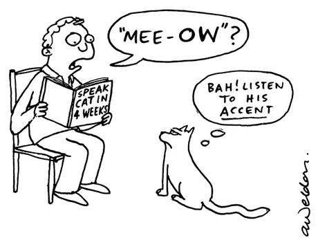
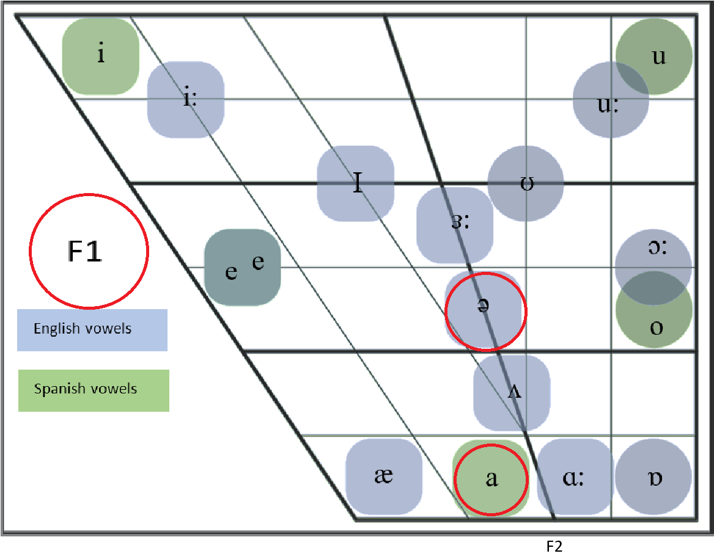
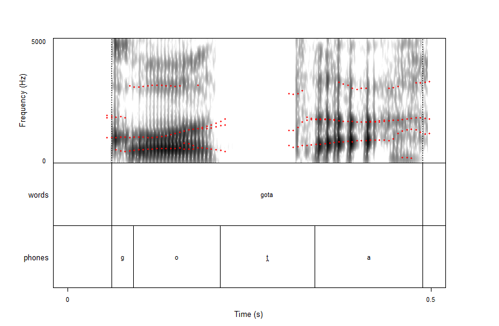
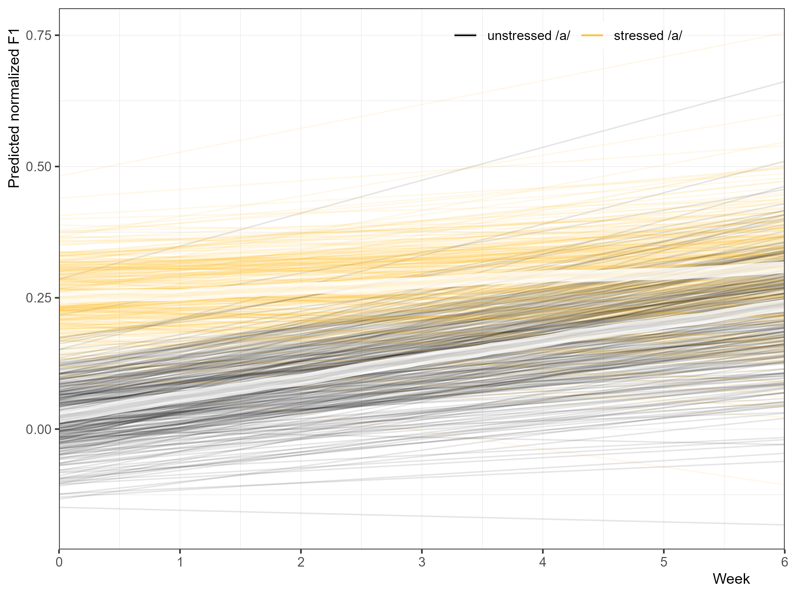
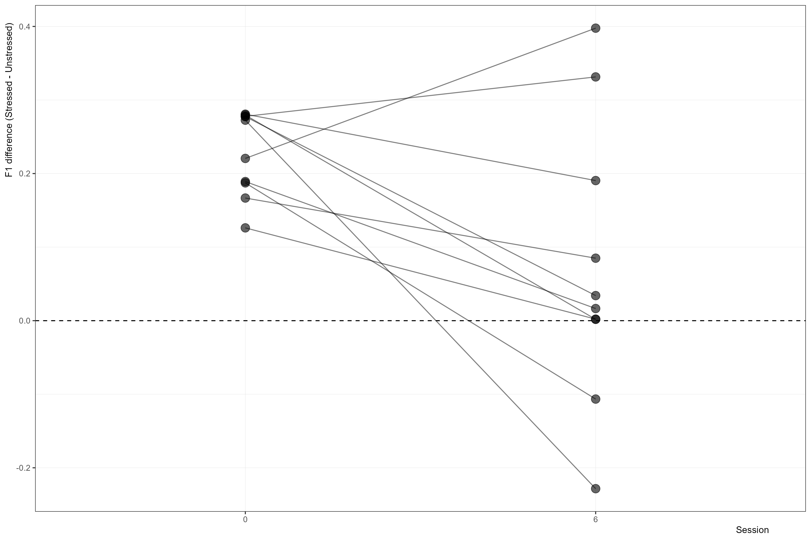
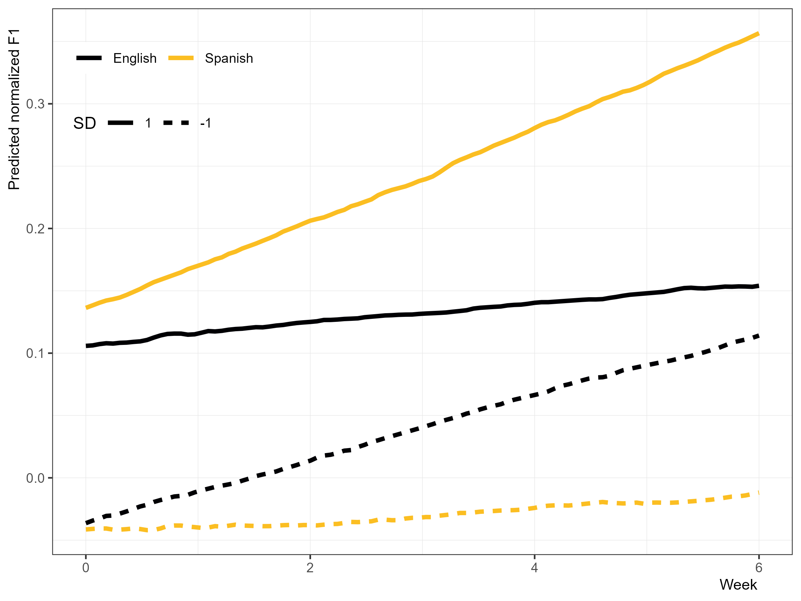
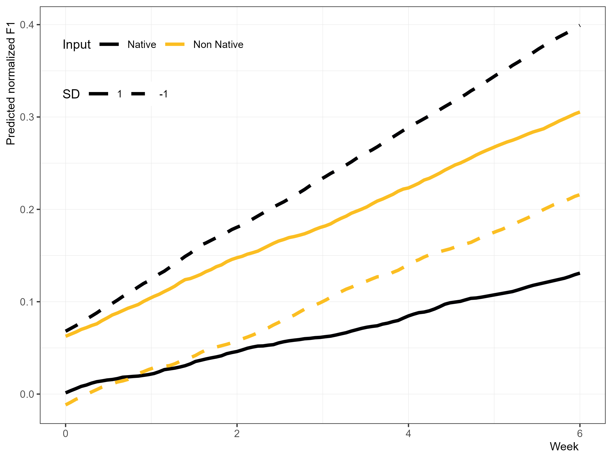
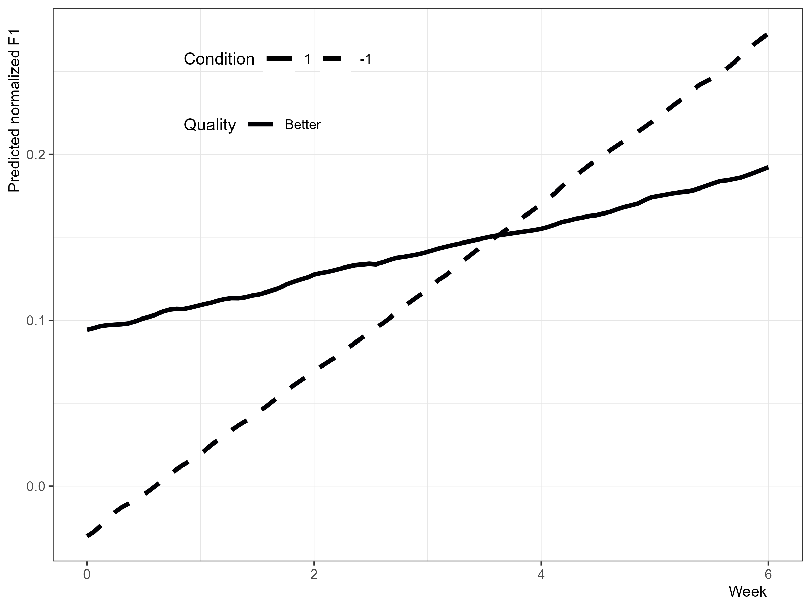
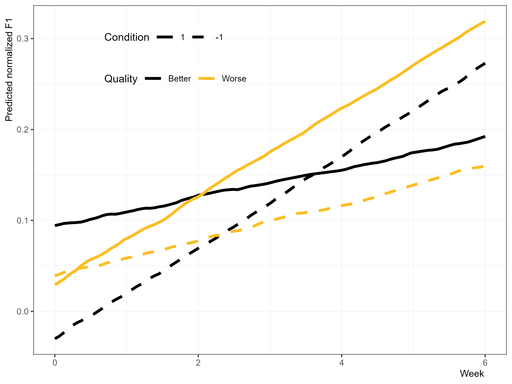
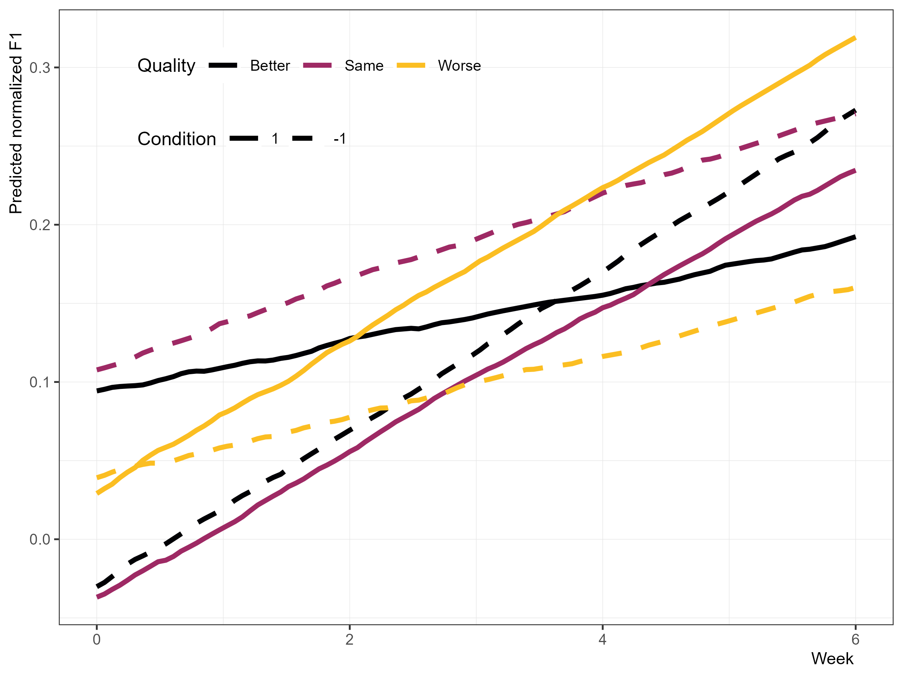

Schwa to /a/: Input Quantity and Quality in L2 Morphophonoloy
Robert Esposito
Rutgers University
2026-03-21
The basics
Input Quantity & Quality
Unstressed /a/ in Spanish
Methodology
Some results
Some discussion & future direction
Input in an L2
Contact with L1 speakers
- Contact with L1 speakers helps accent
- Especially…
- in informal domains (Moyer et al., 2009; Purcell & Suter, 1980)
- when personal, social connections are built (Flege et al., 1995; Moyer, 2004)
A common conundrum
- L2 classroom learners are surrounded by other L2 students (Gass, 2013)
- Either learners interact with their L2 learner peers or the teacher in the classroom…
- Learners produce greater quantity and greater diversity of output in groups (Long et al., 1976)
- So it makes sense why the communicative approach is popular (Mitchell, 2002)
A common conundrum
How do input quantity and input quality impact phonetic development?

Quality versus Quantity for Accent
- Casillas (2020) investigated acquisition of L1 English L2 Spanish /t d/
- Over 7 weeks, collected /t d/ production and self-assessments of…
- Use: Spanish/English
- Input: Native, non-native (+, =, -)
- Participants became more target-like overall
- Only high English use associated with less movement towards target-like production
What about [ə]…
Unstressed vowels are reduced in English, but not Spanish
L1 English
[ˈæɾəm] ‘atom’
[əˈtʰɑmɪk] ‘atomic’
L1 Spanish
[ˈkasa] ‘house’ [maˈma] ‘mom’
(Beginner) L1 English L2 Spanish
[ˈkasə] ‘house’ [məˈma] ‘mom’
L1 English L2 Spanish /a/
L1 English L2 Spanish speakers have issues acquiring unstressed /a/
Iruela (1997)
Cobb (2009)
Aldrich (2014)
Cobb & Simonet (2015)
Bland (2016)
Why so much trouble with unstressed /a/?
- Vowel quality is a major cue for English stress (Tremblay et al., 2021)
- L1 English L2 Spanish learners must adjust their cue weighting of stress to accurately perceive/produce Spanish stress (Ortega-Llebaria et al., 2013)
English: vowel quality, duration, loudness, pitch
Spanish: duration, loudness, pitch
Why so much trouble with unstressed /a/?
- So acquisition of unstressed /a/ is wrapped up in…
- phonetics: modification of tongue height & backness to approach Spanish /a/
- word prosody: modification of stress cues
The present study
Research Question
Do L1 English L2 Spanish learners in an immersion program demonstrate less centralization of unstressed /a/ over the course of seven weeks?
Does their development depend on a measure of language input?
Participants
- Ten L1 English L2 Spanish upper A2 learners
- Seven weeks of domestic immersion program
- Received no instruction in pronunciation from classes
Materials & Task
delayed shadowing (target word in carrier phrase)
126 words that they believed to be Spanish
They repeated each word 3 times, for a total of 378 words per participant
3780 words in total
All words were bisyllabic paroxytones
The final vowel was always unstressed /a/
Some example stimuli
ada
gaka
gota
ita
kaka
eda
Materials & Task
Weekly self assessments of…
- Language use
- Spanish
- English
- Language input
- Native speaker
- Non-native speaker
- Better
- Same
- Worse
So what are we actually measuring?

Montiel (2024)
F1 Extraction
- Montreal Forced Aligner with manual corrections
Praat Mass Analyzer(Vargo, 2025)- Extracts values every 10% of segment
F1 Extraction
- F1 values were averaged for each item (Jacewicz et al., 2011)
- F1 values normalized on a per-speaker basis (Lobanov, 1971)
- This removes baseline differences between participants (e.g., vocal tract size differences)
- Allows us to look at how participants change relative to one another
F1 Extraction

Data Analysis (quick & dirty…)
- Model: Bayesian hierarchical regression (Gaussian)
- Dependent variable: F1 (scaled, continuous)
- Predictors: Week, Total Spanish use, Total English use, Native speaker input, Non-native speaker input, Better NN input, Same NN input, Worse NN input
- All predictors scaled except for session
- All predictors treated as continuous
- Random intercepts: Participant, item
- Random slopes: Session
Results
Stressed versus Unstressed /a/

What about individual changes?

Total Use of Spanish/English

Native versus Non-Native Input

BETTER L2 input

BETTER + WORSE L2 input

BETTER + WORSE + SAME L2 input

Discussion
Some expected findings and implications
- Over 7 weeks of domestic immersion, unstressed /a/ becomes more similar to stressed /a/
[ˈkasə] → [ˈkasa]
Some expected findings and implications
- L1 English L2 Spanish are learning…
- that [ə] is not used in Spanish
- what are and aren’t cues to Spanish stress
- Development in…
- phonetics: learning how to produce /a/ in Spanish
- word prosody: learning Spanish stress cues, unlearning English stress cues
Some more expected findings
More English use → slower acquisition
Less English use → faster acquisition
More Spanish use → faster acquisition
Less Spanish use → slower acquisition
Some unexpected findings!
- More interaction with natives → slower acquisition
- More interaction with more proficient L2 → slower acquisition
A possible explanation
- learners speak more during group activities than teacher-led activities (Long et al., 1976)
- in dyad of low + high prof learners, lower prof L2 learner speak less in some conditions (Yule & Macdonald, 1990)
- learners talk more with other learners than L1 speakers (Porter, 1986)
- So maybe this is a matter of output (Swain, 1993)?
- Maybe it’s a matter of attention?
What can this tell us?
What we can expect from 7 weeks of immersion
What we can expect without explicit instruction on unstressed /a/
Acquisition of word stress cues
L1/L2 interaction
Now we can think of interventions!
The bottom line
- Learners improved overall no matter what!
- The clearest, strongest predictors were
total English useandtotal Spanish use - Interacting with speakers much higher in proficiency than you may slow phonetic development?
Future Research
Going Forward with this Analysis…
- Need to model F2 as well (back-frontness, just not height!)
- Model with GAMMs to see if we can see exactly when a major change occurs
- Will probably need to reassess the F1 processing
- Might not make sense to average all 10 datapoints from each vowel… previous research used 5 points (Jacewicz et al., 2011)
- Data from other tasks (e.g., picture naming) is available
- Compare Spanish /a/ to English /ə/ and /ɑ/
Thanks!

| rme70@scarletmail.rutgers.edu | |
| robertespo.github.io | |
| @RobertEspo | |
| jvcasillas.com/quarto-rutgers-theme |